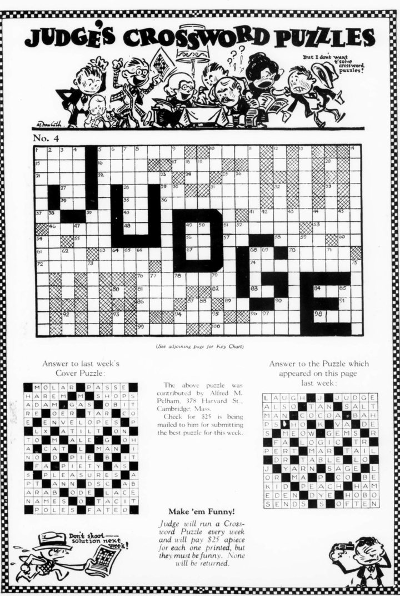
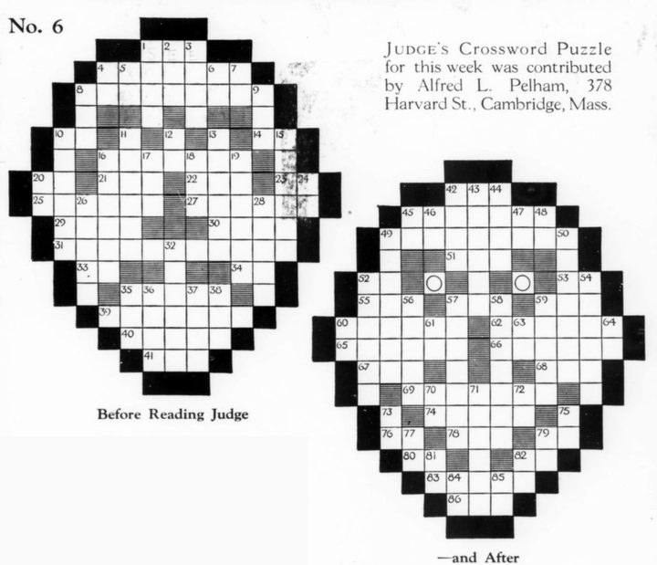
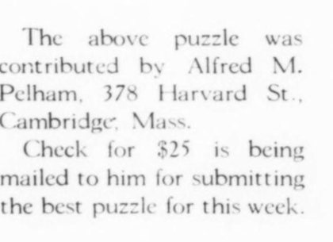
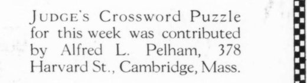
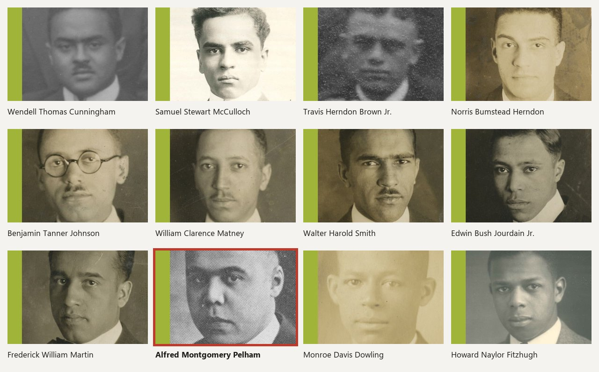
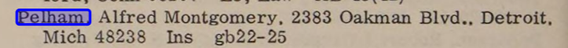
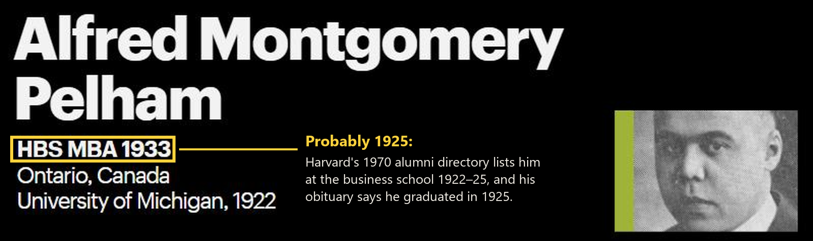
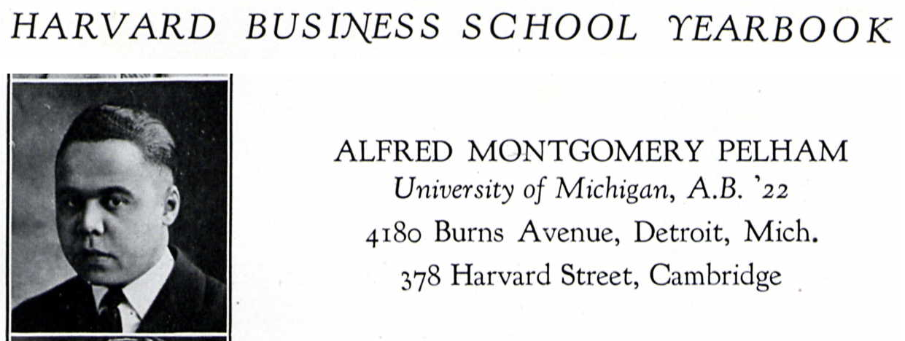
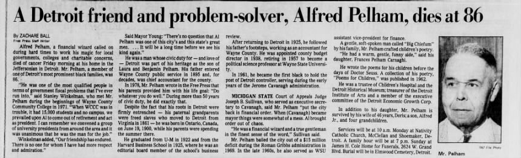

The Harvard student behind two of Judge's most creative crosswords
Two of the most inventive crosswords of 1924 were sent in from a student rooming house in Cambridge. Was their author one of the first Black students at Harvard Business School?
In November 1924 the humor magazine Judge began printing a crossword every week, nearly all of them sent in by readers. We've now transcribed all 531 that Judge printed from 1924 to 1939, and almost all of them are what you'd expect: square grids, mostly 15 by 15. Two are not, and both came in the first month.


No. 4 is 15 squares tall and 26 wide, and no other grid in the run has that shape. No. 6 is the only puzzle of its kind. Only one other shaped grid appears in fifteen years of Judge (a heart, in February 1925), and after that the shapes stop. The magazine credited both puzzles to a reader at the same address:


Alfred M. Pelham and Alfred L. Pelham, both of 378 Harvard St., Cambridge. Who was he?
A business student from Detroit?
Could Alfred M. Pelham have been Alfred Montgomery Pelham of Detroit, Mich., one of about a dozen African Americans who attended Harvard Business School between 1915 and 1930? The same Alfred Pelham who went home to Detroit, spent half a century in public finance, and in 1961 became the city's first Black controller?

Here's what we've found so far.
He was in Cambridge at the time. His obituary in the Detroit Free Press says he graduated from Michigan in 1922 and from Harvard Business School in 1925, where he sat on the editorial board of the school's business review, and Harvard's 1970 alumni directory confirms it, listing him at the business school for 1922–25. So in November and December 1924 he was a business student in Cambridge.


He lived at 378 Harvard St. The Harvard Business School yearbook for 1924–25 lists Alfred Montgomery Pelham, University of Michigan A.B. '22, with a home address in Detroit and, in Cambridge, 378 Harvard Street: the address printed with both puzzles. The 1925 Cambridge city directory shows it was a rooming house, with about eight lodgers listed, Harvard and MIT students among them.

"M." and "L." are probably one man. Same name, same address, two weeks apart. The puzzles share habits too: both draw pictures with shaded squares, which no other Judge constructor did in 1924 or 1925, and both clue AN as "Just one.", which no other puzzle in the run does. Alfred Montgomery Pelham's middle name came from his mother's family, so if he's our man, No. 4's "M." is right and No. 6's "L." may be a misprint.
He was a writer, and a funny one. The obituary says he wrote poems for his children "before the days of Doctor Seuss", published in 1962 as Poems for Children. His family called him "Big Chiefum", and his daughter remembered "a warm, gentle, funny side".

And he made word games all his life. A Detroit Free Press profile from 16 October 1977 says that at 77 he was still looking for a way to publish "an immense series of word and language games", some of them "quite sophisticated", that he had invented in his quiet hours away from committee meetings. (Found by Ben Zimmer.)
None of the records we've found names a crossword, but the name, the address, the school and the dates all fit, and he spent a lifetime inventing word games.
What the puzzles say
Read with a young Black student from Detroit in mind, a few clues stand out. No. 4 mentions the Ku Klux Klan three times, which no other early Judge puzzle we've read does:
Three letters like this one and Rastus leaves town. (K)
Another place besides a Klan meeting where you'll find sheets. (BED)
One more letter like these and you have an empire that you can't see. (KK: the Klan called itself the Invisible Empire)
That puzzle ran on 22 November 1924, less than three weeks after an election in which a Klan-backed write-in candidate, Charles Bowles, very nearly became mayor of Detroit, where Alfred Montgomery Pelham grew up. The jokes are still in the voice of their time ("Rastus" was a minstrel-show name), and we can't know how much of them the magazine's editors touched. Other clues sound like a Harvard student far from home: "A pet name for the brain factory at New Haven." (ELI), and "The kind of drink you go to Montreal for." (ALES), from a young man who grew up across the river from Canada in the middle of Prohibition.
Who he became
Pelham was born in 1900, the son of Benjamin Pelham, one of Detroit's first Black public officials, and grandson of freed slaves who had come to Detroit from Virginia in 1861. After Harvard he went home and followed his father into Wayne County's accounting office. He became the county's budget director in 1938, taught political science at Wayne State, and in the 1960s became the first Black controller of the City of Detroit, then rescued its budget again in 1969 and steered Wayne County Community College out of financial trouble in 1971. When he died, in 1987, Mayor Coleman Young called him "one of this city's and this state's great men."
The first Black constructor in our database
During the crossword craze of the 1920s, thousands of puzzles were published but few constructors were credited by name. Judge's reader bylines give us a unique window into early crossword construction. If we are right in our identification here, then Alfred Pelham is the first Black crossword constructor we know of.
It's unlikely these were his only puzzles. If you find an Alfred Pelham, A. M. Pelham or "Big Chiefum" in a crossword from the 1920s, in a newspaper, a campus magazine or one of the 1924–25 crossword books, or if you know of an earlier Black constructor, please tell us: report it in the catalog.
Sources
- Judge, 22 November and 6 December 1924, on archive.org (public domain). Our transcriptions: No. 4, No. 6.
- Baker Library, Harvard Business School, Student Pioneers.
- Harvard alumni directory, 1970.
- Zachare Ball, "A Detroit friend and problem-solver, Alfred Pelham, dies at 86", Detroit Free Press, 1987, via newspapers.com.
- Profile of Alfred Pelham, Detroit Free Press, 16 October 1977 (found by Ben Zimmer).
- Historic Elmwood Cemetery, Alfred M. Pelham and Benjamin Pelham.
- Harvard Business School Yearbook, 1924–25, p. 57 (via Ancestry.com; found by Ben Zimmer).
- The Cambridge Directory, 1925.
- On the 1924 Detroit election: Charles Bowles, and Detroitography's map of Klan support.
The Judge pages shown are from 1924 and in the public domain. The portraits are from Harvard Business School's Baker Library, the yearbook entry is from the Harvard Business School Yearbook, and the obituary is from the Detroit Free Press; they are shown for research and comment, with credit.